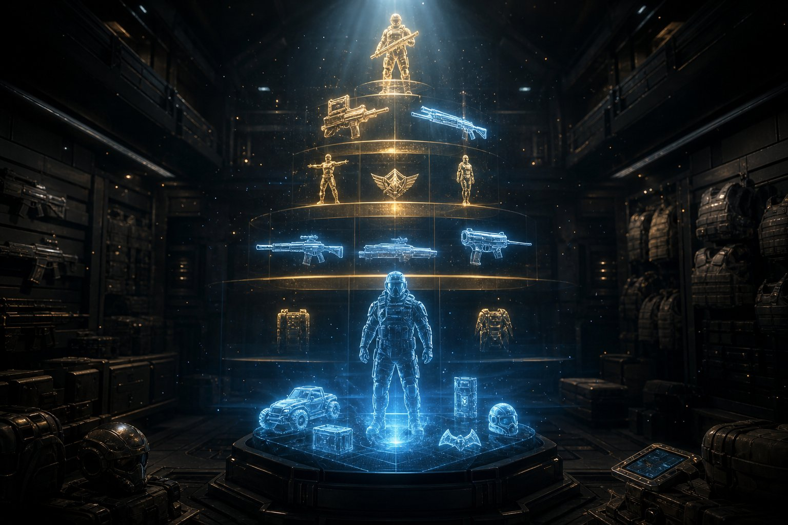

1. Structure du pass
Le pass de saison fonctionne sur le modèle free / premium classique d'ABI, enrichi cette année par les événements limités : les quatre récompenses de progression des missions d'activité du Battle Pass incluent désormais un bonus issu des événements à durée limitée. Concrètement, vos événements de saison font monter votre palier de pass plus vite.
- Piste gratuite : des Koen en quantité — le passage de saison annonce littéralement des millions de Koen récupérables en se connectant.
- Piste premium : encore plus de Koen, plus de skins, plus de cosmétiques, et l'accès aux articles du Battle Pass Store.
- Progression d'activité : les missions d'activité quotidiennes sont le moteur du pass. Elles sont rafraîchies chaque lundi à 05:00 UTC.
Les récompenses d'activité ne se rattrapent pas
Les récompenses d'étoile (star rewards) sont réinitialisées chaque lundi à 05:00 UTC, et les récompenses non réclamées ne sont pas rééditées. La ligne de missions zombies de 40 missions suit la même logique : rattrapée chaque semaine.
2. Les skins exclusifs de la saison
Les skins d'armes exclusifs de la saison s'obtiennent via le Battle Pass Store et les vouchers gagnés en missions ou en événements. Liste annoncée officiellement :
| Skin | Arme | Obtention |
|---|---|---|
| Shooting Star Panorama | Banshee (SMG) | Battle Pass Store / vouchers |
| Shooting Star Panorama | SPR310 (fusil à pompe double canon) | Battle Pass Store / vouchers |
| Streamlined | MPX Micro (SMG) | Battle Pass Store / vouchers |
| Streamlined | Mk14 (fusil de précision) | Battle Pass Store / vouchers |
| Streamlined | SKS (carabine) | Battle Pass Store / vouchers |
| Streamlined | F57 (pistolet) | Battle Pass Store / vouchers |
| Pixel Soldier | AKM | Défi de Merit / check-in quotidien |
| Pixelated Battlefield | AK-74N | Défi de Merit / check-in quotidien |
| Black Rock Shooter | ML Lever-Action | Missions de saison |
Le « Streamlined » se décline sur cinq armes de la même famille visuelle — c'est le set le plus rentable en effort. Le Pixel Soldier / Pixelated Battlefield est le set « rétro pixel » de la saison, obtenu gratuitement via le check-in et le Défi de Merit.
La progression de tirage est conservée
La progression de tirage de la Saison 6 est intégralement reportée : si vous étiez à mi-parcours sur un banner de la saison précédente, vous reprenez exactement où vous vous étiez arrêté. Aucun tirage perdu au changement de saison.
3. Les autres récompenses
- Tacti-Girl Charm Voucher ×15, S7 Skin Supply Coupon ×15, Golden Gift Box ×4, Challenger Banner et le spray Smoke Rises — via le Défi de Merit et le check-in quotidien.
- Background de mode Infiltration exclusif S7 — via les missions de saison.
- Black Rock Shooter (skin ML Lever-Action), Basic Elite Trial Card (30 jours), 3×3 Titanium Case — également via les missions de saison.
- Season Mission Skip Cards, Coin Raid Vouchers et Premium Quick Kits (nouveauté de la saison) — via des missions spécifiques.
- Skins d'armes pour le M4A1, le Banshee, le MPX, cosmétiques de personnage et designs de flashbang supplémentaires.
- Cartes Élite Premium (7 jours) et millions de Koen à claiming dans Event → More Events → Season 7 Utopia.
Comment obtenir la case 3×3 Titanium Case
Le conteneur sécurisé 3×3 se débloque en terminant les missions de saison, en deux difficultés : Normal et Hardcore. Les objectifs publiés pour la Saison 7 tournent tous autour des zones infectées et de la signalétique de Valley.
| Objectif | Mission |
|---|---|
| Éliminer 10 ennemis ou mutants dans la zone ouest de Farm | Back in Shadow |
| Fouiller 15 conteneurs non fouillés dans la zone est de Valley | First Meeting |
| Localiser le signal au Crash Canyon de Valley | Checking the Clues |
| Localiser le signal à la Summit Platform de Valley | Military Isolation Zone |
| Localiser le signal à l'héliport de la Beach Villa de Valley | Military Isolation Zone |
| Éliminer 15 ennemis ou mutants dans Valley | Northridge Situation |
| Survivre 20 minutes à Northridge | Northridge Situation |
| Fouiller 4 boîtes à documents ou caisses de ravitaillement à Northridge | Northridge Situation |
Deux points de vigilance. D'abord, la plupart de ces objectifs se remplissent en Lockdown ou en Forbidden : le seuil de valeur d'équipement y est plus élevé, donc la mission coûte plus cher en matériel perdu qu'en Normal. Ensuite, la case 3×3 est réinitialisée au début de la saison suivante — c'est un objet de saison, pas un achat définitif.
Source : base de données de missions ABI Builder, recoupée avec les guides vidéo de déblocage de la case 3×3 de septembre 2026 — Documenté, non publiée par l'éditeur. Les objectifs de mission évoluent d'une saison à l'autre : vérifiez la liste active dans votre interface avant de planifier une rotation.
4. Où et comment acheter
| Offre | Contenu | Prix |
|---|---|---|
| Upgrade du Battle Pass | 500 Bonds immédiatement, skins, tenue, Koen | 500 Bonds |
| Bundles limités | 450 Bonds + carte Élite 7 jours + skin d'arme exclusif (6 bundles au total) | 4,50 $ par bundle |
| Koen | Koen via les bundles Premium Koen / top-ups | Jamais de puissance jouable payante |
Ce qui n'est pas en vente
Les Bonds achètent des cosmétiques, des passes et de la commodité — jamais du Koen jouable ni de la puissance de combat. C'est une règle de conception de la saison et elle est affichée par l'éditeur.
5. Le pass vaut-il le coup ?
La réponse dépend d'une seule variable : quand vous l'achetez. Un contributeur Reddit a fait le calcul d'un pass de fin de saison et a résumé la logique mieux que tout le monde :
- Beaucoup de récompenses du pass ont été converties en « season points », à dépenser dans le magasin de fournitures de la saison.
- Les articles de ce magasin sont en moyenne de niveau T4 et marqués « op supplies » : ils ne peuvent être revendus sur le marché qu'après avoir été extraits en opération.
- Avec environ 27 000 season points, vous ne couvrez que environ trois semaines d'offres hebdomadaires — soit de l'ordre de 5 000 points par semaine si vous tout prenez.
- À cela s'ajoute le bundle FAL, disponible une seule fois par saison — bon, mais pas revolutionnaire (il contient de la munitions T5).
La règle simple
Début de saison : achetez. Fin de saison : le pass ne se rentabilise plus, sauf si un skin vous intéresse vraiment — dans ce cas, attendez la prochaine saison et économisez vos Bonds. Un pass acheté à 70 % de la saison se joue mais ne se amortit pas.
6. Objectifs réalistes
| Profil | Objectif | Commentaire |
|---|---|---|
| Joueur régulier (~1 h/jour) | Palier 60–70 | Atteignable confortablement en jouant un peu chaque jour |
| Joueur intensif | Palier 80 | Accessible si vous enchaînez les missions d'activité sans interruption |
| Passif | Palier 30–40 | La piste gratuite seule reste rentable en Koen |
7. Calendrier de la saison
- Semaine 1 : revival des événements de connectivité, bonus de connexion, premiers skins.
- Semaine 2 : lancement du Festival Biohazard & Automne (24 sept.) — boutique, Défi de Vinson, Lunar Soil Sample.
- Semaine 3 : loot Bountiful Autumn Store (28 sept.), Defi d'Automne, Patrouille de zone sombre.
- Semaine 4+ : Warlord Tournament 3 (29 oct. → 7 déc.) et pass de fin de saison.
Pour le détail des événements, voir l'agenda de la Saison 7. Pour les rewards d'armes, voir le guide des cosmétiques.
Le meilleur rapport qualité/prix
Les vouchers obtenus via le Défi de Merit et les missions de saison offrent le même accès aux skins que le pass premium, sans achat de Bonds. Commencez par la piste gratuite et les événements, et réservez vos Bonds pour un skin que vous n'obtiendrez pas autrement.